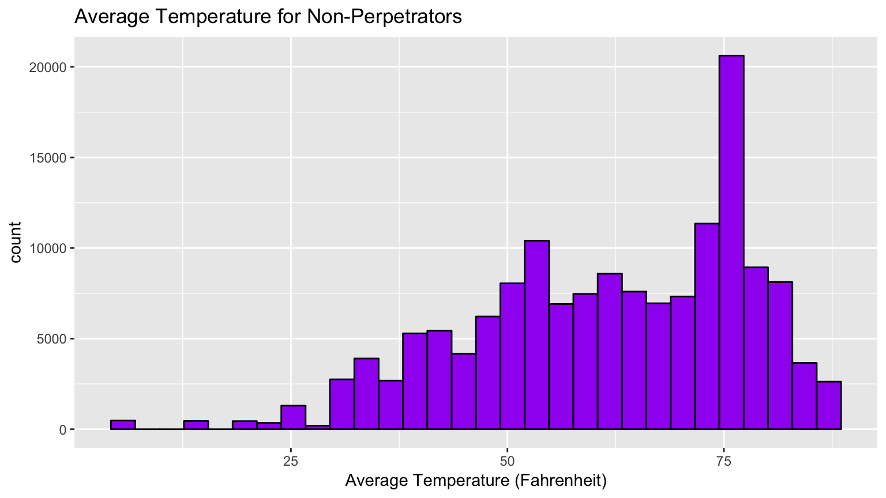
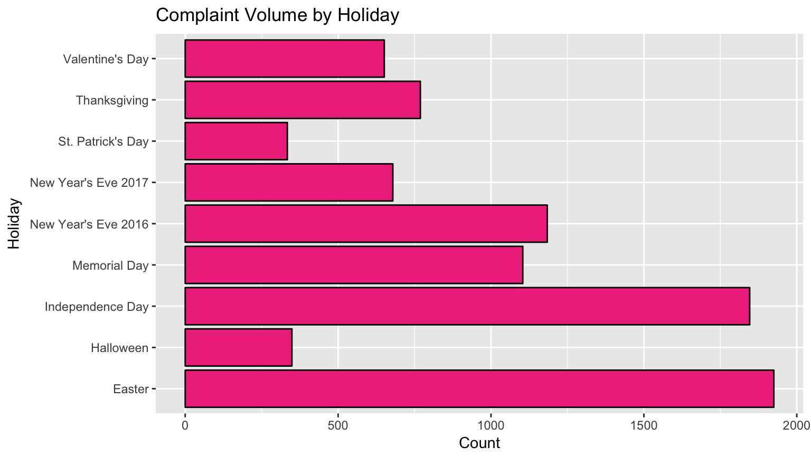
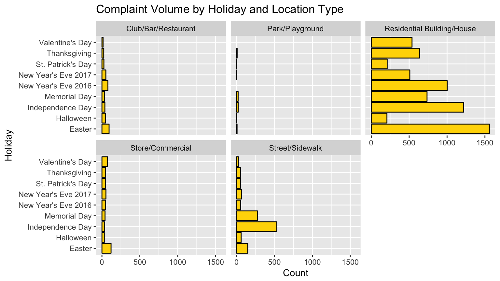

Our main dataset has a total of 147,960 unique non-perpetuators (94%) and 9,897 unique perpetuators (6%). In other words, for every unique perpetuator, there are 15 unique noisemakers that are not reported again in 2016 following their only offense. This graph takes a look at the average temperature that day for party/noise complaints made about non-perpetuators. We can interpret from this visual that non-perpetrators commit their reported offenses during warmer temperatures, especially at 75 degrees Fahrenheit, midway between the heat of 80 degrees Fahrenheit and the comfortable room temperature of 70 degrees Fahrenheit. At the same time, loud party/noise complaint volume for non-perpetuators are less common at temperatures around 25 degrees Fahrenheit and below, already below the initial freezing temperature of 32 degrees Fahrenheit. One reason for this could be because people who are not perpetuators tend to be quieter and more socially insulated during colder temperatures and/or are louder and more social at warmer temperatures. In addition, we chose to display the histogram as purple, because it is the neutral color between red and blue, which are representative of hot and cold temperatures. Like all the visuals on this page, this one’s color scheme is also fitting as a remix of the plasma color scheme used on the front page map.
We can say that this graph, combined with what we know from the introduction page, gives us more context when understanding these noisemakers. When we were working earlier on the Leaflet map to plot all these complaints, not only were there more gold dots in the city, but there were also more widespread dots in areas perpetuators did not cluster in, including Queens, Staten Island, and other areas closer to the water. We can say based on this information that perpetuators cluster in Brooklyn and Upper Manhattan, whereas non-perpetuators recorded in this dataset are typically recorded while on summer vacation. Again, we would have shown this on the Leaflet map, but due to the sheer volume of non-perpetuators it would slow rendering to a drastic crawl.

Finally, we decided to filter our data for commonly-celebrated holidays out of curiosity and see what we could learn about noisemakers in this context. We want to talk about the general results for this, but also felt it was important to investigate this issue faceting by location type, so we included both of these visualizations for this section. Immediately we can see that Easter and Independence Day have the most complaints logged, since they are the only two holidays to log over 1750 complaints. The holidays in spring and summer logged more complaints than those in winter and fall. Surprisingly, the two quietest holidays are also two holidays expected to be somewhat loud: St. Patrick’s Day and Halloween, both barely clearing 250 complaints. It is possible that out-of-towners could be making up somewhat summery non-perpetrators increasing the complaint levels of holidays like Easter and Independence Day. Furthermore, it comes as no surprise that New Year’s Eve 2016 has more complaints than New Year’s Eve 2017, especially since the later noisemakers persist, the more complaints they solicit.
Turning our attention towards the same data but filtered by location type, we have a few different interesting things to talk about, some key insights from the second graph. The two loudest holiday celebrations reported from clubs, bars, and restaurants were New Year’s Eve 2016 and Easter. Reasonably, the New Year’s Eve trend from the previous graph is echoed in this facet. The quietest holiday celebrations in those areas were Valentine’s Day, which makes sense because it is a day where people celebrate their relationships and it does not have a loud, aggressive vibe like that in that kind of setting. Since most of our reports were sent in from locations reported as houses and residential areas, the graph for this location type has all of the trends as described in the overall holiday analysis. Moving on to stores and commercial sites, the two holidays logging the most complaints for that location type were Easter and Valentine’s Day. This makes sense given that those are two holidays involving candy and novelty purchase and distribution.
Now we know these insights about the noisemakers reported in 2016: The reports come to us mostly from residential buildings and houses, and for every perpetuator recorded in this dataset. Perpetuators tend to raise the volume in colder temperatures, especially around Upper Manhattan and Brooklyn. However, non-perpetuators are distributed more evenly, and are more active during the summer months. On top of that, the two holidays with the most complaint volume are Easter and Independence Day. We hope you had fun reading about what we found, and hopefully you can use this data to help plan a trip or two if you want less noise when visiting NYC.
Weather data in New York City - 2016, Kaggle Inc., 2017. 2016 Parties in New York, Kaggle Inc., 2017. *Temperature, California Department of Food and Agriculture, 2017.